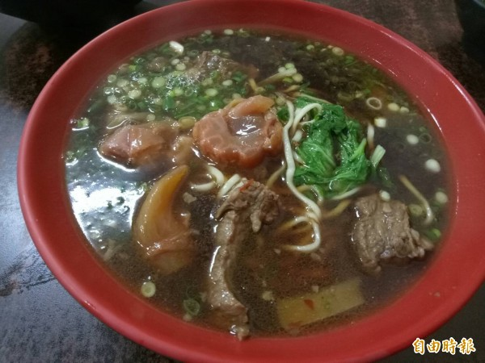

Menu 麵類
好吃的台中牛肉麵!
〔記者張軒哲／台中報導〕牛肉麵是台灣最具代表性小吃之一，台中市人氣牛肉麵店「牛杯杯」在潭子與東區各有店面，2家店都是一開店就客滿，受到學生跟上班族歡迎，百元牛肉麵跟50元餛飩麵料多味美，只要多加10元就能多一糰麵，份量相當飽足，灑滿蔥花跟肉燥的燙青菜只要20元，在物價高漲的年代，堪稱「佛心麵店」。

- 餛飩麵跟灑滿蔥花肉燥的燙青菜只要70元。
- 牛杯杯麵店的牛肉麵跟餛飩麵料多味美。
- 牛杯杯潭子店用餐時刻大排長龍。
- 牛杯杯牛肉麵店在門口煮麵，衛生用料看得見。
牛杯杯牛肉麵10多年前先在台中市東區進德路開店，麵好、湯濃、肉大塊「大碗又滿意」， 受到台中體大學子喜愛，7年前在潭子區大豐路開了第2間店，2間店麵類跟價格都是便宜又大碗， 潭子區的電子廠員工非常捧場，每到用餐時刻一位難求，外帶的客人大排長龍。即使工作繁忙，
員工依舊保持該有的禮貌跟笑容，年輕老闆娘許玉蘭更是大方，每逢夜間打烊前， 若有小菜或滷蛋還沒賣完，常免費送客人。 麵店上午10點半營業後，鍋爐冒著熱騰騰白煙，牛肉滷汁飄香，老闆熟練下麵、撈麵加上牛肉高湯， 是許多學子跟上班族的美食記憶。許玉蘭說，因為婆婆在員林開牛肉麵店，也學會煮牛肉麵，
以紅燒口味為主，牛肉麵分為原汁、家傳跟麻辣三種，牛肉選用澳洲牛肉， 麵選用員林的製麵廠製作的白麵，不吃牛肉的客人常點餛飩麵，因為餛飩大顆料多。 潭子店從開店就成為大豐路上的人氣名店，附近電子廠員工跟外勞一吃成主顧，小菜也很便宜，
燙青菜跟皮蛋豆腐只賣20元，料多實在又不貴，是多數客人的共同評價。 老主顧陳玨安說，常從神岡到潭子吃牛肉麵，味道絕佳又飽足，CP值很高，如果肚子很餓，就會點大碗，一次吃2糰麵，非常過癮。